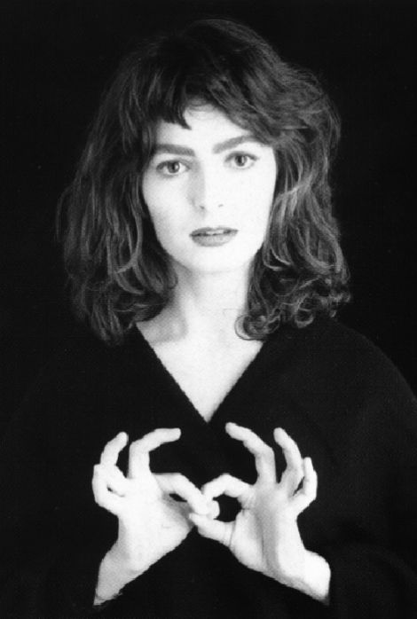

partie historique!
Nous allons découvrir ensemble deux figures importantes de la langue des
signes... !
| abée de l'épée | Emmanuelle Laborit |
|---|---|
 |
 |
| dates: 1712-1789
la légende dit qu'il aurait vu deux jumelles sourdes signer entre elles et qu'il aurait voulu aider cette langue à se développer en créant la première école pour enfants sourds. |
dates:1972-
actrice reconnue pour son rôle dans "les enfants du silence" et son autobiographie "le cri de la mouette" elle est directrice de l'IVT célèbre théâtre bilingue. Elle se bat pour la langue des signes et la reconnaissance de la culture sourde. |